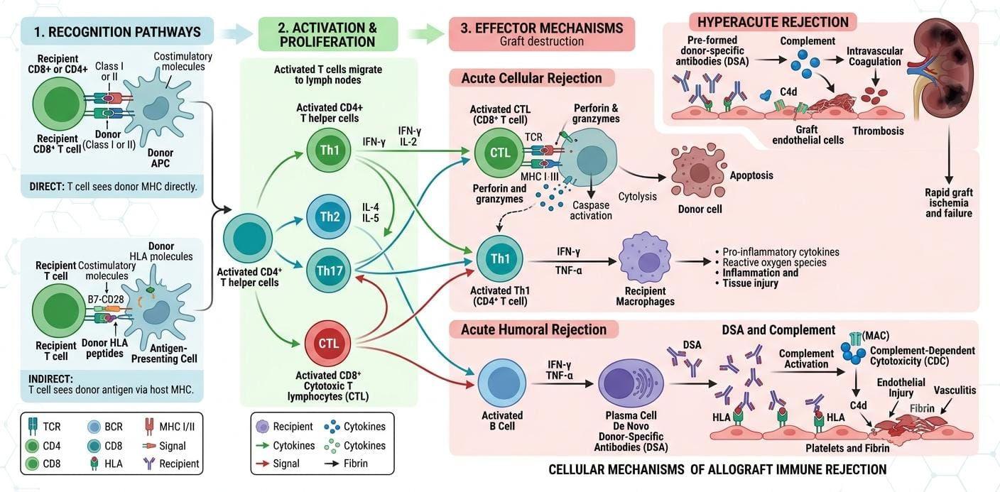

Despite extraordinary advancements in tissue engineering and surgical methodologies, graft failure remains a formidable clinical challenge in reconstructive burn surgery. The ultimate survival of any cutaneous graft—whether autologous, allogeneic, or synthetic—depends heavily on the rapid establishment of a microvascular network and the evasion of aggressive host immune responses.

When utilizing temporary allografts or xenografts, the primary physiological hurdle is cell-mediated immune rejection. As illustrated in Fig xii, the host's immune system rapidly identifies foreign Major Histocompatibility Complex (MHC) antigens present on the surface of the donor tissue. This recognition triggers a robust systemic cascade, activating host T-lymphocytes that actively infiltrate the graft. These cytotoxic T-cells systematically destroy the foreign epithelial and endothelial cells, leading to acute tissue necrosis, vascular thrombosis, and the ultimate sloughing of the graft within two to three weeks.
The immunological barrier to permanent allograft survival is orchestrated by a highly complex interplay of innate and adaptive immune responses. Initially, the surgical trauma of the burn itself induces a state of systemic hyper-inflammation. When an allogeneic graft is applied, donor-derived dendritic cells present within the grafted tissue migrate to the host's regional lymph nodes. Here, they engage directly with the host's CD4+ and CD8+ T-cells in a process known clinically as direct allorecognition.
Simultaneously, the host's own antigen-presenting cells scavenge cellular debris from the graft and present foreign MHC peptides to the immune system (indirect allorecognition). This dual-pathway activation triggers the massive proliferation of allo-reactive T-cells, which migrate directly back to the wound bed. Upon arrival, they release a storm of pro-inflammatory cytokines, including Interferon-gamma (IFN-γ) and Tumor Necrosis Factor-alpha (TNF-α). This localized cytokine storm not only induces direct apoptosis of the graft cells but also severely damages the fragile neovascular networks attempting to supply the tissue with oxygen.
To counteract this aggressive biological rejection, researchers are actively investigating localized immunosuppression techniques. Systemic immunosuppressants, such as the calcineurin inhibitors frequently used in solid organ transplants, are generally contraindicated in severe burn patients due to their already compromised immune states and extreme susceptibility to lethal sepsis.
Therefore, the focus of modern tissue engineering has shifted toward developing "immune-evasive" biomaterials. By masking foreign antigens with specialized hydrogel coatings or utilizing localized nanoparticle drug delivery systems to release immunosuppressive agents directly at the wound interface, clinicians hope to significantly extend the viability of temporary biological dressings without compromising the patient's critical systemic defenses.
Furthermore, cutting-edge research is focusing on the induction of active immune tolerance. By co-culturing allogeneic skin constructs with host-derived Regulatory T-cells (Tregs) or incorporating Mesenchymal Stem Cells (MSCs) into the dermal scaffold, scientists aim to suppress the local proliferation of cytotoxic T-cells. These regulatory cells act as biological peacekeepers, shifting the wound microenvironment from a state of aggressive rejection to one of acceptance and active regeneration.
Even with perfectly histocompatible autografts—where the risk of immunological rejection is completely eliminated—non-immunological clinical challenges frequently result in catastrophic graft loss. The wound microenvironment must be meticulously prepared and rigorously managed post-operatively to ensure successful inosculation and angiogenesis.
| Primary Etiology | Mechanism of Graft Failure | Clinical Prevention Strategy |
|---|---|---|
| Mechanical Shearing | Frictional forces physically disrupt the fragile new capillary connections during the delicate inosculation phase. | Strict anatomical immobilization (splinting) and the application of firm compressive bolster dressings. |
| Hematoma / Seroma | Blood or serum accumulation creates a physical barrier, separating the ischemic graft from the vascularized wound bed. | Meticulous surgical hemostasis prior to application and extensive graft meshing to facilitate fluid drainage. |
| Bacterial Infection | Pathogens consume critical oxygen and secrete proteolytic enzymes that actively dissolve the graft's collagen matrix. | Aggressive surgical debridement of necrotic eschar and integration of topical antimicrobial nanotherapies. |
Bacterial colonization is particularly devastating in the context of extensive thermal injuries. Pathogens such as Pseudomonas aeruginosa and Staphylococcus aureus encase themselves in a dense Extracellular Polymeric Substance (EPS) matrix, creating highly resilient biofilms. These biofilms not only hijack the nutritional supply necessary for graft survival but also trigger a stalled, hyper-inflammatory response, flooding the wound bed with matrix metalloproteinases (MMPs) that literally digest the fibrin networks anchoring the new graft.
Managing these multifaceted clinical challenges requires a highly synchronized multidisciplinary approach. Surgeons must strictly balance the timing of excision, the precise mechanical immobilization of the graft, and the localized deployment of advanced biological and antimicrobial therapies to create an optimal physiological environment for permanent integration.
To combat these persistent physical and biological threats, the future of burn care is moving towards "theranostic" or smart dressings. These advanced bio-interfaces are embedded with micro-sensors capable of providing continuous, real-time telemetry on the wound's pH, temperature, and moisture levels. By actively monitoring the microenvironment for early signs of subclinical bacterial colonization or ischemic stress, clinicians can intervene aggressively before catastrophic graft failure ever occurs.